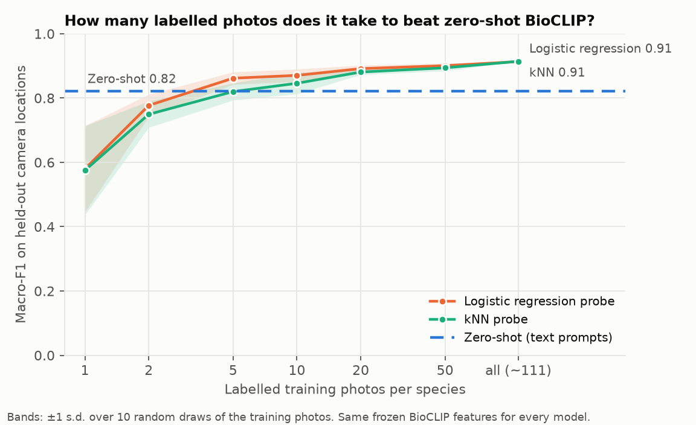
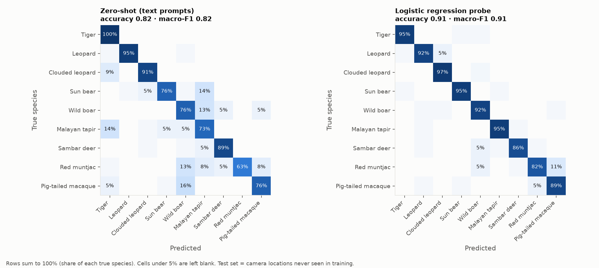
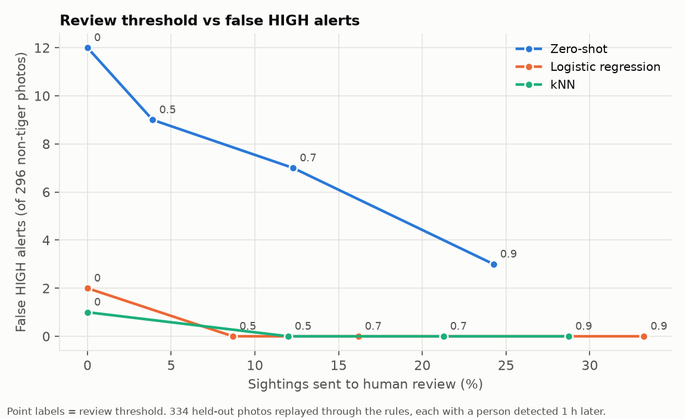
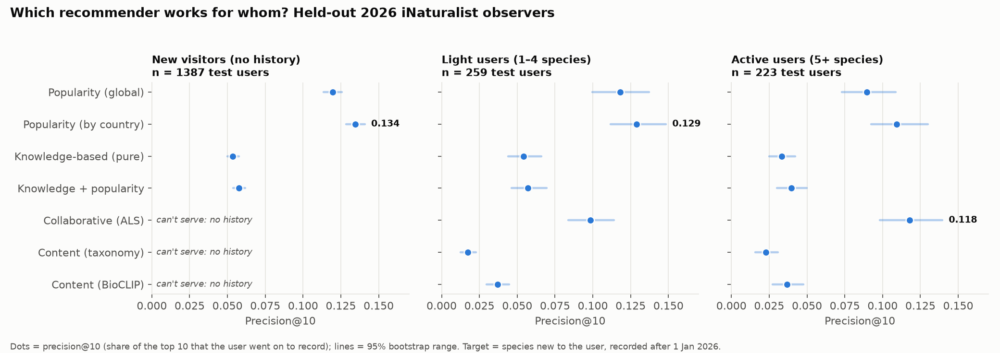
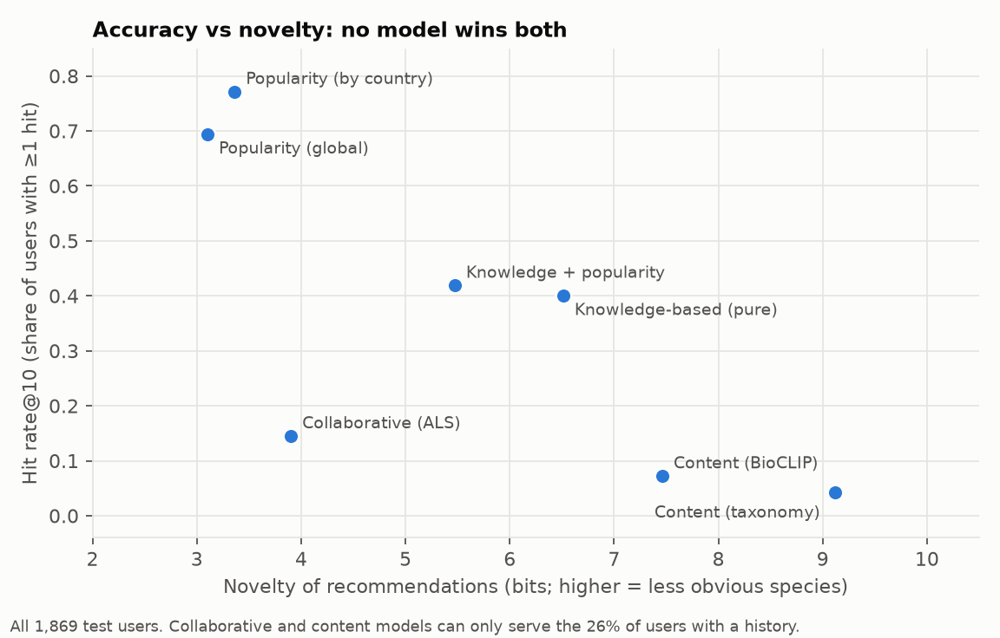

← Applied AI Projects
In Progress · three results in
Wildlife Intelligence System
An AI system for the critically endangered Malayan tiger and the wildlife of Singapore and Peninsular Malaysia.
It turns raw camera-trap images into sightings, reasons over those sightings with knowledge graphs, and outputs
prioritised, multilingual alerts and trail suggestions.
Status as of 15 Nov 2026
MegaDetector
BioCLIP
NLLB-200
RDF / OWL
SPARQL
PyKEEN
Implicit ALS
GBIF / iNaturalist
How It Works, in Plain English
Camera traps in the forest take far more photos than people can look through, and most frames are empty.
This system has two halves that feed each other. The perception half
looks at each photo and asks: is anything there, and what is it?
The reasoning half takes that answer and asks:
does this matter, who should know, and what should a visitor go and see?
1 · The journey of one camera-trap photo
Built & tested
Built, results not yet measured
To do
Perception: photo → sighting
Triage · MegaDetector
Is there an animal, a person, a vehicle, or nothing?
Empty frames are dropped. A person or vehicle in a protected forest is a possible poaching signal. Result: it found the animal in 98% of 1,350 animal photos.
↓
Identify · BioCLIP
Which species is it?
The animal is cropped out and passed to BioCLIP, a model trained on images from across the tree of life. The experiment compares two approaches: asking the model directly with species names (zero-shot), and training a small classifier on its features with ~110 labelled photos per species. Result: 0.82 vs 0.91 macro-F1 (see below).
↓
Reasoning: sighting → decision
Knowledge graph
What do we know about this species?
An ontology of 26 taxa: their IUCN status, habitats, threats and protected areas, queried with SPARQL.
Rules
Does it need an alert?
e.g. a critically endangered species and a person detected in the same zone → high-priority alert. Uncertain or implausible sightings go to a human first.
↓
Translate · NLLB-200
Tell people in their language
Alerts are translated into Malay, Tamil and Chinese, and checked for the errors that matter: species names, place names, severity.
Recommend
What should a visitor go and see?
The plan: knowledge-graph suggestions for first-time visitors, suggestions learned from other observers for active ones. Result: the simplest approach won (see below).
2 · Why three kinds of knowledge graph?
Ontology
Curated facts with precise meaning (“Critically Endangered ranks above Endangered”). Rules need this precision.
Property graph
Messy, high-volume records of who saw what, where and when. Good for co-occurrence analysis.
Embedding KG
Predicts links nobody wrote down, such as a species–habitat pair that's missing from the curated facts. Extends my TransE assignment.
First Results: Identifying Species in Camera-Trap Photos
The test photos come from 160 camera locations the models never saw during training. That matters because photos
from one camera share a background, so testing on a familiar camera would flatter the model. All three methods use the same
BioCLIP features. The only difference is how the final decision is made.
0.82
macro-F1, zero-shot: BioCLIP given only the species names, no training
0.91
macro-F1, a simple classifier trained on ~110 labelled photos per species
5
labelled photos per species were enough to beat zero-shot (0.86 vs 0.82)
98%
of animal photos where MegaDetector found the animal

95% ranges, from resampling whole camera locations: zero-shot 0.76–0.87, classifier 0.88–0.95. The classifier was better in every resample.
Surprise
The mistakes weren't the look-alikes I expected
I expected tigers and leopards to be confused. They almost never were (≤3%). Instead, zero-shot errors piled into a few
“attractor” species: of 60 mistakes, 16 were labelled wild boar, 15 tapir and 12 tiger. Five tapirs were called tigers. The trained
classifier learns its boundaries from real photos, which removes most of this pull.

Trade-off
The trained classifier can't say “I've never seen this”
Shown 17 photos of a Sunda pangolin, a species it was never trained on, the classifier confidently called 8 of them a clouded leopard.
Zero-shot, given “pangolin” as one more option, named 9 of 17 correctly. Higher accuracy came at the cost of recognising new species.
Ablations
Cropping and wording both matter
Classifying the animal crop instead of the whole frame raised scores from 0.78 to 0.82 (zero-shot) and from 0.87 to 0.91 (classifier).
Scientific-name prompts beat plain English (“a camera trap photo of a sun bear”): 0.82 vs 0.78.
Full metrics, all four figures and the limitations are in the
camera-trap write-up on GitHub.
Second Result: From Sightings to Alerts
A sighting only matters if someone acts on it. The reasoning layer is a set of 18 rules over the knowledge graph.
They decide whether a sighting needs an alert, how urgent it is, or whether a person should check it first. Every alert explains
which rule fired and why.
Knowledge filling a gap the camera can't. The camera only sees “tiger”. It can't tell a Malayan tiger
(Critically Endangered) from a Sumatran one. A rule supplies the answer: in Malaysia, the only tiger is the Malayan tiger.
In the other direction, a “tiger” seen in Singapore is flagged for review, because tigers aren't recorded there.
To test the whole chain, I replayed the 334 held-out camera-trap photos through the rules, each followed by a person detected
an hour later. 38 of them are tigers and should become HIGH-priority alerts. The question is how often a wrong species
turns into a wrong alert.
12
false HIGH alerts from zero-shot species ID (5 were tapirs called tigers)
0
false HIGH alerts from the trained classifier with human review
9%
of sightings sent to a human to get there
17
scenario tests; one caught a bug that had silently disabled two rules

Confidently wrong
A review threshold can't catch confident mistakes
Sending low-confidence sightings to a person barely helped zero-shot. 22% of its mistakes came with at least 90% confidence,
against 3% for the trained classifier. Even with a quarter of sightings reviewed, zero-shot still raised 3 false HIGH alerts.
My own blind spot, found and fixed
A tiger read as a wild boar slipped through, until one more rule
I first sent only uncertain predictions of threatened species to review. A tiger misread as a wild boar, at just 34%
confidence, passed silently, because wild boar isn't threatened. I added a rule: if the classifier is unsure and its second guess is threatened,
a person checks. For the trained classifier, silently missed tigers fell from 1 to 0, unreviewed mistakes from 12 to 7, and the share of species errors
caught by review rose from 38% to 55%. The cost: 9% of sightings reviewed instead of 6%. Zero-shot gained almost nothing, because its mistakes are confident.
Protecting the animals
The data an anti-poaching rule needs is hidden on purpose
Public records blur the location of threatened species, typically by about 31 km, so poachers can't use them. 79% of
Critically Endangered records are blurred, against 7% of common species. Only one Critically Endangered species could be placed in a
specific reserve, so the system has to rely on its own camera evidence.
Rules, tests and the full replay results are in the
knowledge-graph write-up on GitHub.
Third Result: What Should a Visitor Go and See?
My plan was a classic one: suggest species from the knowledge graph to new visitors, who have no history to learn from,
and use collaborative filtering (learning from what similar observers recorded) for active users. I tested it on
1,869 iNaturalist observers, held out by time. Each model was trained on records before 2026, then scored on
whether its top 10 suggestions included species the person went on to record for the first time in 2026.

Surprise
The simplest model won
“Show the most-observed species in your country” beat every other approach for new and light users. For active users it
tied with collaborative filtering (0.109 vs 0.118, with overlapping uncertainty). The hybrid, chosen fairly on earlier data, picked
popularity for everyone. A hybrid that switches between models only helps if one of them overtakes the other for some users,
and here none did.
Knowledge vs learning
The knowledge graph explains, but it knows too little
The knowledge-based recommender scored about 0.055, less than half of popularity. Its 26 curated species cover only 14% of
what people actually went on to record. In return, every suggestion comes with a reason (“recorded in Singapore; lives in 4 habitat
types; Endangered”), and it points people to less obvious species.
Perception helps reasoning
The camera model made better “species like this one” suggestions
For suggestions based on species a person has already seen, BioCLIP, the vision model from the camera pipeline, beat
hand-built taxonomy features. Its understanding of species names was a better guide to which species go together.

No model wins on both accuracy and novelty. Popularity is right most often but suggests what everyone already sees.
The full protocol and limitations are in the
recommender write-up on GitHub.
What the Data Has Already Taught Me
Setting up the data exposed problems that the design has to handle. Each one is recorded and will be part of the write-up.
Knowledge
An automated lookup would downgrade the Malayan tiger
GBIF returns the IUCN status for the species tiger (Endangered) because it can't resolve the Malayan subspecies, which is Critically Endangered. Without a curated, cited correction, the main alert rule would miss the flagship animal.
Data gap
Public camera-trap data contains no people
LILA BC withholds images of humans for privacy: all 150 sampled human images were unavailable. So the anti-poaching signal can't be tested on camera-trap data, and it will be tested on other public images, with the domain gap stated.
Domain gap
The “tigers” are Sumatran, and most leopards are Kenyan
302 of 321 tiger images come from Indonesia, and 382 of 470 leopard images from Kenya. The second becomes a deliberate test: does an African savanna leopard look like a Lao forest leopard to the model?
Translation
Machine translation drops the urgent part of alerts
In a first check on 3 alerts, the Chinese output stopped at the first comma every time, dropping the endangered species and the instruction to rangers. In Tamil, “Malayan tiger” came back as “Malayalam tiger”. In Malay and Tamil, “critically endangered” was weakened to “endangered” or “dangerous”.
Curated vs measured
Occurrence records contradicted my own assumptions
I had marked sambar deer as absent from Singapore. GBIF holds 94 Singapore records since 2015. The fix is an explicit rule for when records override curated facts, not a quiet edit.
Cold start
Half the observers have recorded a single species
In 63,003 iNaturalist records (6,618 observers, 728 species), 47% of observers recorded just one species, and only 0.73% of observer–species pairs are filled. That's why I planned to switch between a knowledge-based and a collaborative recommender. The third result above tests whether that actually works.
Data So Far
1,400
camera-trap images (LILA WCS), 9 species, split by camera location
26
taxa in the ontology, with IUCN status, habitats and threats
65,953
iNaturalist observer records, SG + Peninsular Malaysia
20
test alerts for translation into Malay, Tamil and Chinese
Why split by camera location? Photos from the same camera share a background. If the same camera appears in both training and test data, a model can score well by recognising the background instead of the animal. Keeping each camera on one side of the split prevents that.
Build Status
✓ Data pipelines: camera traps (LILA WCS), occurrences (GBIF / iNaturalist), IUCN status
✓ Camera-trap pipeline end to end (MegaDetector → crop → BioCLIP), smoke-tested on real images
✓ Ontology schema + 26-taxon seed, queryable with SPARQL (unit-tested)
✓ Knowledge-based recommender with explanations + trail suggestions (unit-tested)
~ NLLB-200 translation: module and test set built, first check run; full evaluation needs reference translations
✓ Experiment: zero-shot vs linear probe vs kNN on held-out camera locations, with confusion matrices, few-shot curve and ablations
✓ Rule-based alerts in SPARQL (18 rules, 17 scenario tests), plus replay of real camera predictions through the rules
✓ Recommender comparison: popularity, knowledge-based, collaborative (ALS), content-based (taxonomy and BioCLIP) and a switching hybrid, on held-out 2026 observers
○ Property graph + embedding KG link prediction (TransE vs another model)
○ Integration loop and interactive demo
Tech Stack
Detection
MegaDetector v5a
Species ID
BioCLIP + scikit-learn
Translation
NLLB-200 (600M)
Knowledge graph
rdflib, NetworkX, PyKEEN
Recommenders
implicit (ALS)
Data
LILA BC, GBIF, iNaturalist
View on GitHub →